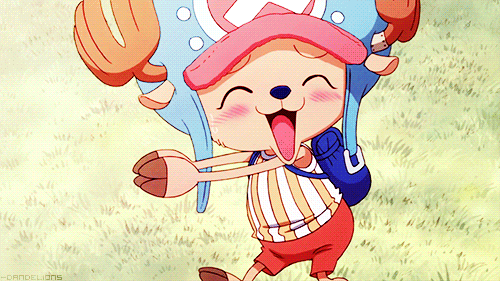

Who is Tony Tony Chopper?
Chopper is a reindeer and a member of the Straw Hat Pirates in the popular manga and anime series, One Piece. He is the ship's doctor and possesses the power of the Human-Human Fruit, which grants him the ability to transform into a human-reindeer hybrid.
Chopper is a very unique character in the series because of his cute and innocent appearance, which contrasts with his impressive medical skills and his fierce determination to protect his friends. Despite being an animal, he was able to learn the human language and become a qualified doctor, making him a valuable member of the Straw Hat crew.
Chopper's backstory is one of the most heart-wrenching in the series. He was ostracized and mistreated by other reindeer due to his blue nose, which they believed to be a curse. However, he was eventually taken in by Dr. Hiruluk, who taught him medicine and helped him to believe in himself. This experience taught Chopper the importance of friendship and acceptance, and he now fights to protect those he cares about.
Throughout the series, Chopper is often seen as the emotional heart of the Straw Hat Pirates. He is always willing to lend a sympathetic ear and offer advice, and his playful and innocent personality often provides comic relief in tense situations. Despite his small size and adorable appearance, Chopper is a formidable fighter and is capable of holding his own against powerful opponents. Overall, Chopper is a beloved and memorable character in the One Piece series.